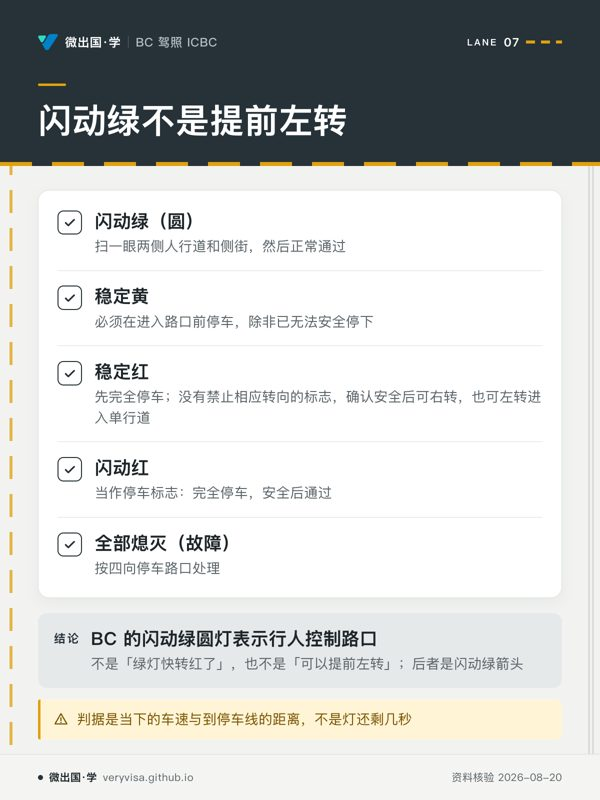

🃏 Flashcards · 3 闪卡 · 3 张 🖼 Slides · 2 幻灯 · 2 页 ✍️ Questions · 4 刷题 · 4 道
交通标志与信号 Signs & Signals P1 必拿分 P1 Must score
ZH EN ZH + EN
先看这一章怎么考 First, how this chapter is tested
场景识别题：描述雪天牌面被遮挡或远距离逆光场景，考察能否仅凭独一无二的几何轮廓（八角形、倒等边三角形、荧光黄绿五角形）直接判断最高优先级的驾驶指令。 Scenario identification questions: Describe scenes where signs are obscured by snow or backlit by glare, testing whether you can identify the highest-priority driving instruction solely by its unique geometric outline (octagon, inverted equilateral triangle, fluorescent yellow-green pentagon). 时段与条件对比题：把学校区（School zone）和游乐场区（Playground zone）的生效天数、起止时段及附牌（tab）规则混合设问，测试是否掌握「学校区看日历和钟、游乐场区看天光」。 Timeframe and condition comparison questions: Mix the effective days, operating hours, and bottom tab rules for school zones and playground zones, testing whether you understand that school zones follow the calendar and clock while playground zones follow daylight. BC 特有信号辨析题：针对闪动绿圆灯（Flashing green light）与闪动绿箭头（Advance green arrow）设置跨省认知干扰，考察在 BC 遇到不同绿灯形态时的正确应对。 BC-specific signal distinction questions: Use interprovincial differences regarding flashing circular green lights and advance green arrows as distractors, testing your correct response when encountering different green signal types in BC. 最常丢分的陷阱（看到题干信号就警觉） Traps that cost the most marks (watch for the signal in the stem)
学校区与游乐场区时段对调 Swapping school zone and playground zone hours 题干出现 School zone 或 Playground zone，且提及周末（如周日下午）、非上课日或具体时段。 The question stem mentions School zone or Playground zone along with weekends (such as Sunday afternoon), non-school days, or specific timeframes. 把闪动绿圆灯当成提前左转或即将转红 Mistaking a flashing circular green light for an advance left turn or an impending red light 题干出现 flashing green light（无 arrow 字样），询问该信号的含义或驶近路口时的做法。 The question stem mentions a flashing green light (without the word arrow) and asks about the signal meaning or the proper action when approaching the intersection. 认为所有实线都绝对不可跨越 Assuming all solid lines can never be crossed under any circumstances 题干出现 single solid yellow line、double solid yellow line，并搭配 passing a cyclist 或 turning left into a private driveway。 The question stem mentions single solid yellow line or double solid yellow line paired with passing a cyclist or turning left into a private driveway. 本章考点页：导图、要点表、7 道带逐项解析的练习 →
ICBC 自己说过：知识测试里差不多每五题就有一题问标志。 50 题的卷子只允许错 10 题，标志这一块不熟，容错就被吃掉了大半。
好消息是这一块最不需要死记——它是一套有内在规律的编码系统 。把规律吃透，没见过的标志也判得出来；只背图案，见到变体就懵。
一、原理与设计逻辑：形状定类别，颜色定语气 本节回答 This section answers 凭专属几何形状认停与让行，凭颜色和红圈斜杠判禁令与限定 Identify stop and yield by unique geometric shapes; determine prohibitions and restrictions by colors and circle-slash toggles. 本章考题 1 Question 1
为什么形状承载最重要的信息
标志系统要在最恶劣的条件下工作：雪糊住了牌面、强烈逆光、夜间远距离、驾驶者的英文不够好。在这些情况下最先能辨认的是轮廓，其次是颜色，最后才是文字。
所以设计者把最要命的指令绑定到独一无二的形状上 ：
八角形 → 只有一个含义：停。 整套体系里没有第二种标志用八角形。倒等边三角形 → 只有一个含义：让行。 荧光黄绿五角形 → 只有一个含义：学校区。
这三个形状的专属性是有意为之。哪怕牌面完全被雪盖住，只剩一个八角形的轮廓，指令依然成立。
上图：八种基本形状与它们各自的类别。八角形＝停；倒三角＝让行；黄底菱形＝一般警告；橙底菱形＝施工区警告；竖长方形黑白＝管制规则；红圈加红斜杠＝禁止；荧光黄绿五角形＝学校区；横长方形绿底＝指路信息。
颜色管的是「语气」和「时效」
一个实用推论：看到绿底或蓝底，可以先放松 ——它们不会要求你做任何事。看到白底竖牌或任何红色，则必须读懂，因为违反它们可以直接开罚单并计分。
圆形这一族：斜杠是开关
红圈 + 红斜杠 → 禁止 做圈里画的那件事。绿圈 → 允许 做圈里画的那件事。红圈但没有斜杠 → 不是禁止，是限定 。例如红圈里一个左转箭头配上时段，意思是「此时段只准左转」。
判读顺序固定：先看有没有斜杠，再看圈里画的是什么。
节末检索小测 · 先别往回翻，凭记忆作答 Quick recall check: answer from memory before scrolling back
While approaching an intersection, you see a white regulatory sign featuring a red circle with no diagonal slash over a left-turn arrow and a time period. What does this sign mean?
驶近路口时，你看到一块白底管制标志，上面是一个没有斜杠的红圈，圈内画着左转箭头并附有时段。这块标志是什么意思？
a Left turns are prohibited during the posted time period. ✗ 落入「红圈无斜杠误判为禁止」陷阱。红圈加上红斜杠（red circle with a slash）才代表禁止；没有斜杠时不是禁止。 Falls into the trap of misinterpreting a red circle without a slash as a prohibition. A red circle with a red diagonal slash indicates a prohibition; without a slash, it is not a prohibition.
b You must only turn left during the posted time period. ✓ 正确。在管制标志（Regulatory sign）中，判读顺序是先看有无斜杠：红圈但没有斜杠不是禁止，而是限定（即在该时段只准做圈里画的左转动作）。 Correct. On a regulatory sign, the reading order is to check first for a slash: a red circle without a slash is not a prohibition but a restriction, meaning only the indicated left turn is permitted during that time period.
c Left-turning traffic has an advance green arrow during that time. ✗ 混淆了标志与信号灯。提前左转由闪动绿箭头（Advance green arrow）信号灯控制，而非红圈标志。 Confuses signs with traffic signals. Advance left turns are controlled by advance green arrow signals, not by a red circle sign.
d Left turns are recommended but not legally required. ✗ 混淆了颜色的法律义务。白底与红色标志属于有强制法律义务的管制规则，并非仅提供建议的指路信息标志（Information and destination sign）。 Confuses the legal obligations of sign colors. White and red signs represent regulatory rules with mandatory legal obligations, rather than advisory information and destination signs.
看答案与每个选项的解析 Show the answer and why each option is right or wrong 答案 Answer ：b
二、2026 现行实务 本节回答 This section answers 学校与游乐场区时段、闪绿灯、铁道口、施工区及标线规则 Operating hours for school and playground zones, flashing green lights, railway crossings, construction zones, and pavement marking rules. 本章考题 2 Question 2 本章考题 3 Question 3
学校区 vs 游乐场区：全卷最经典的对调陷阱
这两个都是 30 km/h，都需要有牌，但生效时段完全不同 ，而且出题人几乎必定把它们对调来做干扰项。
图：学校区 vs 游乐场区——生效时段完全不同
记法：学校区看日历＋看钟；游乐场区看天光。
这个差别不是随意定的：学校的人流跟着课表走，课表之外校园是空的；而游乐场在周末和暑假人反而更多 ，跟着日照走才对得上真实风险。
牌子底下那块小附牌（tab）才是权威。 若附牌写明了时段，照它；若只写了速度没写时段，则适用默认的「上课日 8:00–17:00」。所以看到学校区牌不要只读数字，要往下扫一眼。
还有一种变体牌写的是「有儿童在路上或路肩时才减速」——那是条件性 的，与前两种又不同。三种情形要分开。
BC 特有：闪动的绿色圆灯
这是整份卷子里最值钱的一个 BC 特有知识点 ，也是外省与外国来的司机最容易栽的地方。
在 BC，闪动的绿色圆灯表示：这是一个行人控制的路口。
主路平时一直是绿灯；
行人按下按钮 后，它才转黄、再转红；侧向街道面对的是停车标志 ，那里的车可能正等着插进来。
它不是 「绿灯快转红了」，也不是 「可以提前左转」——后者是闪动绿箭头 的含义，安大略等省份用闪动绿圆灯表达这个意思，BC 不是 。
正确反应不是刹车，而是扫一眼两侧人行道有没有人准备按钮、侧街有没有车在等 ，然后正常通过。
信号灯完整对照
黄灯那句条件句不能丢 ：「必须停车——除非停不下来 」。判据是当下的车速与到停车线的距离，不是灯还剩几秒。删掉这个条件，规则就从安全变成了危险：黄灯亮起时若已太近，急刹制造的是追尾。
铁路道口
铁路道口红灯闪动时须完全停车并保持等待，不能因暂时看不到或听不到火车就自行通过。正常通行应等红灯停止闪动、栏杆完全升起，再观察所有轨道、确认没有第二列火车且出口有空间后通过；现场有授权人员指挥时遵从其指挥。
底层是物理不对等 ：一列货运列车紧急制动要滑行超过一公里，火车不会为你减速。所以规则把全部避让义务放在车辆一侧。另有两个陷阱：道口常有视线遮挡；第一列过去后第二列可能正从反方向驶来 。
施工区
有牌时一天 24 小时有效 ，与当下有没有工人在场无关；区内罚款加重 ——考试口径写的是「施工区罚款加倍」，卷面照这句答；按现行罚款附表，施工区超速 20 km/h 以内罚 $170、21–40 km/h 罚 $220，比普通路段（$120／$170）高，但不是整整一倍；交通指挥员（traffic control person）的手势优先于标志与信号灯 。
加重罚款的设计逻辑是把风险成本压回驾驶者身上：施工区里作业人员离车流往往只有几十厘米，没有护栏也没有逃生空间。
ICBC 考试口径里有一块施工区警示牌的示意图印着「最低罚款 $196」。这个数对得上现行罚款附表：施工区超速 20 km/h 以内罚 $170，加上受害人附加费，票面正好 $196（30 天内缴付 $171）。
路面标线
先分颜色，再看虚实：
黄线分隔对向车流；白线分隔同向车道。 白实线禁止变道；白虚线可在安全时变道。黄虚线允许安全超车；黄实线与虚线并列时，只可从虚线侧安全超车；双黄实线禁止超车。单黄实线允许格外谨慎地安全超车，不能概括成所有实线都不可跨。
双黄实线在左转进出道路或私家车道 时可有例外，但须安全、不妨碍其他交通且无禁转标志；这不允许沿路超车。
还有一条常被漏掉：在安全前提下，允许跨越单条黄实线以超越骑自行车的人 。法律宁可你短暂借道，也不要你贴着人过。
节末检索小测 · 先别往回翻，凭记忆作答 Quick recall check: answer from memory before scrolling back
You reach an intersection where all the traffic signal lights have gone completely dark due to a power outage, and no traffic control person is present. How must you proceed?
你到达一个因停电导致所有交通信号灯全部熄灭的路口，且现场没有交通指挥员。你必须如何通行？
a Treat the intersection as a four-way stop. ✓ 正确。当路口信号灯全部熄灭（故障）（blacked-out traffic light）时，法定规则是将其按四向停车（four-way stop）路口处理。 Correct. When traffic signals at an intersection are completely blacked out due to an outage or malfunction, the legal rule is to treat the intersection as a four-way stop.
b Continue through at normal speed if you are on the wider main road. ✗ 错误。信号灯故障熄灭时，主干道不再享有绿灯通行许可，不能不停车直接通过。 Incorrect. When traffic signals are dark due to a power outage, the main road no longer has a green light permission and drivers cannot proceed through without stopping.
c Treat the intersection as a pedestrian-controlled flashing green light. ✗ 混淆了灯态。行人控制路口（pedestrian-controlled intersection）显示的是闪动绿圆灯，而非信号灯全部熄灭。 Confuses signal indications. A pedestrian-controlled intersection displays a flashing circular green light, not completely dark signals.
d Slow down and proceed without stopping unless another car is already turning. ✗ 这是闪动黄灯（flashing yellow light）或让行标志的做法，信号灯全灭必须像面对停车标志一样先完全停车。 This is the procedure for a flashing yellow light or a yield sign; when signals are completely dark, you must come to a complete stop just as you would at a stop sign.
看答案与每个选项的解析 Show the answer and why each option is right or wrong 答案 Answer ：a
三、现实案例 本节回答 This section answers 跨省闪绿灯误区、周日游乐场限速、深夜施工区及久亮绿灯应对 Interprovincial flashing green misunderstandings, Sunday playground limits, late-night construction zones, and handling stale green lights. 本章考题 4 Question 4
场景一：温哥华某主干道，闪动绿灯。
一位刚从多伦多搬来的司机看到闪绿，条件反射地减速准备停——后车差点追尾。在安大略，闪动绿圆灯意味着可以提前左转；在 BC，它意味着行人控制。同一个灯，两省含义完全不同 ，而没有任何东西会在路口提醒你这件事。
场景二：周日下午的游乐场区。
「今天不上课，应该不限速」——这个推理套用的是学校区 的规则。游乐场区每天 都在黎明到黄昏之间限速 30，周日照样有效，而且周日的游乐场人更多。
场景三：深夜的施工区，路上一个人也没有。
限速牌立着，罚单照开，而且比普通路段贵 。规则的判据是牌子在不在，不是人在不在。
场景四：驶近一个亮了很久的绿灯。
绿灯亮得越久，越接近转黄。经验丰富的做法是提前松油门、准备停车 ，而不是加速抢。这类题在卷面上常以「你应当如何处理」的形式出现，答案永远指向准备停，而不是抢时间。
节末检索小测 · 先别往回翻，凭记忆作答 Quick recall check: answer from memory before scrolling back
You are driving toward an intersection where the steady green light has been on for a long time. What is the safest action to take as you approach?
你正驶向一个稳定绿灯已经亮了很久的路口。接近路口时最安全的做法是什么？
a Speed up to clear the intersection before the light turns yellow. ✗ 落入「抢黄灯」陷阱。考试中面对亮了很久的绿灯，答案永远指向准备停车，而不是加速抢时间。 Falls into the trap of trying to beat the light. On the exam, when approaching a stale green light, the correct answer always points to preparing to stop rather than speeding up to save time.
b Brake hard and stop immediately at the stop line while the light is still green. ✗ 错误。绿灯仍在亮时不应该在停车线前急刹停车，这就像误把闪绿灯当红灯一样容易引发后车追尾。 Incorrect. You should not brake abruptly before the stop line while the light is still green, as doing so risks being rear-ended just like mistaking a flashing green light for a red light.
c Ease off the accelerator early and be prepared to stop if the light changes. ✓ 正确。稳定绿灯（steady green light）亮得越久越接近转黄，经验丰富且符合考试标准的做法是提前松油门、准备停车。 Correct. The longer a steady green light has been on, the closer it is to turning yellow; the experienced and exam-standard approach is to ease off the accelerator early and prepare to stop.
d Sound your horn to warn side-street drivers and maintain your speed. ✗ 错误。绿灯只是通行许可而不是绝对路权，保持原速并鸣笛不能解决信号即将转换带来的停车距离问题。 Incorrect. A green light is only a permission to proceed rather than an absolute right-of-way; maintaining speed and honking does not address the required stopping distance if the light changes.
看答案与每个选项的解析 Show the answer and why each option is right or wrong 答案 Answer ：c
四、历史变迁 本节回答 This section answers 二手资料常见的闪动绿灯与方向盘 9 点／3 点握姿纠偏 Correcting second-hand errors regarding flashing green lights and 9 and 3 o'clock steering wheel hand positions.
标志与信号这一块的长青程度是全卷最高的 ：形状与颜色的编码体系数十年来基本稳定，学校区与游乐场区的时段写在 Motor Vehicle Act s.147 里，不随年度调整。
也正因如此，这一块最容易出现另一种过时 ——不是规则变了，而是二手资料本来就抄错了 。核查过程中确认的两处：
本篇未能核实的两项，如实标出 ：① BC 现行最高的公路限速是多少、省内是否有路段张贴 120 km/h；② 红箭头下是否单独禁止右转（现行考试口径章节里只写了稳定红灯的通则，没有单独描述红箭头）。查不到就不写 ，不拿常识填空。
本篇引用的 Motor Vehicle Act 条文，法规站标注的现行状态为 2026-10-27 。
节末检索小测 · 先别往回翻，凭记忆作答 Quick recall check: answer from memory before scrolling back
To reduce the risk of injury from an inflating airbag, what hand position on the steering wheel is taught in the current knowledge test material?
为了降低安全气囊展开时造成伤害的风险，现行笔试资料传授的方向盘握姿是哪一个？
a 10 o'clock and 2 o'clock. ✗ 落入「旧资料过时说法」陷阱。10 点／2 点是早期旧传握姿，未考虑现代安全气囊展开路径。 Falls into the trap of outdated information. The 10 and 2 o'clock position was taught in older materials and did not account for the deployment path of modern airbags.
b 8 o'clock and 4 o'clock. ✗ 错误。本章核查的现行官方考试口径并非此位置，而是 9 点／3 点。 Incorrect. Current official exam materials verified for this chapter do not specify this position, teaching 9 and 3 o'clock instead.
c One hand at the 12 o'clock position. ✗ 错误。单手握在顶部正挡在安全气囊展开路径上，不符合安全驾驶规范。 Incorrect. Placing one hand at the top directly blocks the airbag deployment path and does not comply with safe driving standards.
d 9 o'clock and 3 o'clock. ✓ 正确。与安全气囊展开路径有关，现行官方考试口径教的是 9 点／3 点（9 o'clock and 3 o'clock），而非旧传的 10 点／2 点。 Correct. To reduce injury from the path of a deploying airbag, current official exam materials teach 9 and 3 o'clock rather than the older 10 and 2 o'clock advice.
看答案与每个选项的解析 Show the answer and why each option is right or wrong 答案 Answer ：d
五、边学边测
这一节的练习题在第 3 章考点页 ：每题点选即判分，附逐项解析，答错的题自动进间隔复习。也可以先去备考中心 做一次诊断。
六、核心术语双语表
延伸阅读
论坛全文：2026 BC 笔试考点一｜交通标志与信号灯（Signs & Signals）
七、来源清单
均为 2026-08-20 核查。
ICBC《Learn to Drive Smart》第 3 章 Signs, signals and road markings——形状与颜色体系、标志分类、信号灯对照表
ICBC《Learn to Drive Smart》第 4 章 Rules of the road——闪动绿灯、红灯转弯、路面标线、掉头
ICBC《Learn to Drive Smart》第 6 章 Sharing the road——学校区实务、施工区、铁路道口、超越骑车人可跨黄实线
BC Reg 89/97 Schedule 3 ——施工区超速罚款（现行至 2026-10-27）Motor Vehicle Act, RSBC 1996, c.318 s.147(1)(2)——学校区与游乐场区限速与时段（法规站标注现行至 2026-10-27）
ICBC《Get your L》——标志题约占五分之一的说法出处
ICBC ICBC Learn to Drive Smart ，第3章印刷页37、第四章印刷页43；2026-09-06下载官方PDF回核：红灯右转要保留禁转标志及车辆、骑车人、行人三类让行条件。
ICBC CN CN铁路道口安全规则 明确等待栏杆完全升起且红灯停止闪动，与ICBC第6章页97的停车、观察第二列车及安全通过要求合读。
本页知识卡 不看正文也能拿到这一节的核心内容：先看导读，再看图。点图放大，左右翻页。
放大 ⤢ 红与白底黑字有法律义务；绿、蓝没有。 先看 先顺着第二列扫一遍；它直接区分哪些颜色会带来强制要求。易漏 黄牌的影响不等于直接命令；判断时别只盯颜色鲜艳程度。下一步 去练习，用遮住文字只看轮廓和颜色的方式做辨认题。详情与分享 → 
放大 ⤢ 闪绿圆灯是行人控制路口，不是提前左转。 先看 先看闪绿圆灯那格；这类题最容易被外省经验带偏。易漏 红灯转向还受禁转标志、让行和安全条件约束；图里只压到核心动作。下一步 去练习，专做灯态变换和停车时机判断。详情与分享 → 本站依据官方原文自撰 · 出处见正文链接